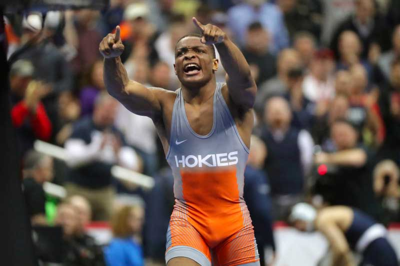

March is here and it only means one thing, the matness is back. After another exciting season with championship storylines fueling, it we are coming up on the finish line. There was a total of 287 allocations distributed to the seven conferences. Let’s take a dive into what went where and the wrestlers who should be on watch to steal a spot The Big 10: Wrestling in the Big 10 is like playing football in the SEC. It’s grueling and the best of the best are occupying it.
125 – There were 10 allocations awarded here and my expectations is all 10 of those guys who earned place in the top 10. Of the 10 wrestlers who earned an AQ the most dangerous ones who can bust up the bracket are Patrick McKee, and Drake Ayala. McKee showed us at the big dance last year he can shine when the lights are on, he can shine with his third place All American performance. Though he’s struggled some this season, this history along with the threat of his big move ability makes him a clear guy to watch for. Ayala may be young, but he’s shown he’s not scared to be in the moment with his 14-4 record. Of his four losses three of them have come to Minnesota’s Patrick McKee and Ayala was in striking distance to knock off the All American every time. Ayala has some impressive wins this season and could look to follow up on surprising freshman performances we’ve seen in the past at this weight. 133 – This weight received 10 AQ’s and has the defending national champion and three returning All Americans as well. Since we’re talking about making some noise in the postseason, I can say that things may get started here with Maryland’s King Sandoval. Sandoval has been solid for the Terps this season and is looking to lead a surge under head coach Alex Clemson. Sandoval has had some nice highlights this season with big wins over Ohio States Dylan Koontz and a few other non-conference wrestlers who earned AQ’s. Wisconsin’s Kyle Burwick is another guy who could possibly steal a spot. Burwick is a returning national qualifier who’s had a bit of an up and down season. Usually when there’s a guy like this my immediate thoughts come postseason time are they can be turning a corner and are always dangerous.
141 – A weight class not only consisting of the defending champ and returning All – Americans, but here we have the three title contenders and seven allocations. Most interestingly we have two returning All – Americans who didn’t earn an AQ. I think I speak for all of us when I say Chad Red and Stevan Micic are going to have some quality guys on the outside looking to receive an at large bid. Additionally, Illinois Dylan Duncan is also a returning All – American who needs to steal a spot and should.
149 – there are seven allocations for this weight and some real dark horses I think can steal three of them. The first is Michigan State’s Patrick Omania who at last year’s Big 10 tournament was producing some nice oohs and ahs with his headlocks. The next would-be Michigan’s Kanen Storr who has been a bit of a mystery this season. Storr is a multiple time national qualifier with little sample size to really guage what he can do in this postseason. This should make him very dangerous and is why he’s someone to watch for. Finally, there’s Minnesota’s Michael Blockhus who like Omania and Storr is another national qualifier looking to steal a spot to get back in.
157 – We’ve all been talking about Brady Berge and the fact he would have to steal a spot after going back down to his original college weight. With seven allocations here I see no reason why he shouldn’t but another guy to watch out for to steal a spot would be Nebraska’s Bubba Wilson. Wilson has been super solid for the Husker’s this season and has two wins over returning All – American Cam Amine.
184 – With few quality wins I wasn’t expecting to see Iowa’s Abe Assad earn an AQ and it appears he didn’t. He is however ranked 5th in his conference and has been solid for the Hawkeyes in his return season. With 12 spots available expect to see him punch his ticket to Detroit.
The Big 12:
125 – In this conference I think the obvious names to look at stealing a spot would be Brody Teske of Northern Iowa, and Joey Prata of Oklahoma. Teske is the defending Big 12 champion and seems to be putting it together at the right time. Prata has been solid for the Sooners since coming over from Virginia Tech. Like Teske Prata also appears to be peaking at the right time and recently defeated Oklahoma States Trevor Mastrogiovanni.
133 – With six AQ’s for the taking the one name that comes to mind is Madrigal of Oklahoma. Madrigal showed us last year when he made a run to the Big 12 finals last year to qualify for NCAA’s that he can put it together at the right time and there’s no reason to think he can’t do it again.
141 – This is probably one of the more wide-open weight of all the conferences and when you look at the names in it it’s certainly something to get excited for. With that said I expect all of the top seven wrestlers to keep their AQ’s once this is over.
149 – We’ve only got four spots here and while I feel similar here as I do at 141 a guy who could sneak into a spot is UNI’s Colin Realbuto who has given some top guys fits as of late.
157 – We’ve got a solid field here with six allocations, but I actually feel the same about Realbuto’s teammate Derek Holschlag who has also given fits to some top tier wrestlers.
165 – Shocking to some Oklahoma States All – American Travis Wittlake did not earn one of the four allocations here. The good news for Cowboys fans is barring anything crazy he should be able to get in.
174 – Interestingly enough, NDSU’s Austin Brenner is ranked while Air Forces Sam Wolfe is not yet Brenner did not get an AQ due to his record. You can take a guess who I’m picking as a “dark horse” to steal a spot here.
184 – Tate Samuelson should steal a spot here as he’s not an AQ guy. Depending on how the bracket shapes out Mizzou’s Jeremiah Kent could be the odd man out hoping to receive a wild card.
285 – With six allocations awarded here I have two wrestlers in mind who could steal a spot based on what we’ve seen from them. UNI’s Carter Is ley is someone we haven’t seen much of this year but has wrestled for the Panthers as of late. Based on his pedigree who should be looked at as someone to watch as should Josh Heindselman of OU. Heindselman has had some tough close losses to some top tier talent and could look to turn the tide during conference weekend.
The ACC:
125 – The ACC will see three wrestlers head to the NCAA’s and Patrick McCormick is a guy I could see snagging that last spot. Virginia Tech’s All-American Sam Latona has struggled a bit this year and as a big 125 you got to believe these struggles are weight related. Latona has come on of late after knocking off NC State’s Jacob Camacho but this might be more of a matchup issue with Camacho and I believe we need to see what Latona looks like on a two-day weigh-in.
133 - There’s five spots here at 133 with a bunch of solid dudes who should all qualify. We know the pedigree of UVA’s Brian Courtney and I think he’s a big move from stealing a spot over the conference weekend.
149 - UNC’s Zach Sherman did not receive an allocation but we should all expect him to finish top 4 to punch his ticket to Detroit after watching him wrestle the top guys here in the past.
157 - Only thing I’ll say at 157 is Ed Scott is going to be a highlight real here carry on...
197 - At this weight there are three spots and UNC’s Max Shaw didn’t qualify for one of them. He’s more than capable of knocking off Aiello or returning NCAA finalist Bonaccorsi who’s had some tough losses this season.
Photo courtesy of Hunter Martin Getty Images
The EIWA:
125 - The EIWA has grown into one of the more tougher conferences in the NCAA as they usually receive the 2nd or 3rd most allocations among conferences. There are 4 spots here and I think that 4th one could be for the taking. 2020 NCAA qualifier Joe Manchio might be the one to do it.
133 - In the EIWA this weight might be one of the more intriguing weights in the country because there’s only two AQ’s and a few guys who can steal them. The first is returning EIWA champ Malyke Hines who I think we all expect to qualify. After that I could See Dom Lajoi, Anthony Sobotker or even Columbia’s Angelo Rini sneak in for that second spot.
141 - We’ve got four spots up for grabs here and my expectations are that Lehigh’s Connor McGonagle will take one of them from someone here. McGonagles been solid but just missed the criteria for an AQ.
149 - So this weight in the EIWA is interesting. We have four spots up for grabs. I feel confident enough to say Manzona Bryant will steal one probably with a big pin to put the exclamation point on it. Marshal Keller and PJ Ogunsanya are two other guys in the hunt here.
157 - Of the five spots 157 has to offer I believe the 5th will be up for the taking. Parker Kropman would be my leading candidate to do that, but Hunter Richards might be a close second after he appears to have become Cornell’s starter.
165 - There’s seven AQ’s in the EIWA at 165. Like 157 it’s those final ones that can realistically be for the taking. Looking at the field I believe Hofstra’s Ricky Stamn and Binghamtons Brevin Casella should be guys to watch out for to knock someone off for a final berth at Detroit.
174 – With four spots to grab I believe Lehigh’s Jake Logan (who has some close losses to a few quality wrestlers) should be viewed as a possible guy to steal that lost spot.
184 - There are three spots at 184 with solid wrestlers qualifying each. With that being said I’d be shocked if at least one of them isn’t waiting for a wild card after conference weekend. Look for Brian Bonino to possibly steal one here.
197 – This weight has five AQ’s and looking at the field if there’s anyone who can take one of those spots it’s Hofstra’s Trey Rodgers. Rodgers has a win this season over Braxton Amos who earned an AQ in the Big 10 and is also a returning qualifier himself.
The MAC:
125 - Anthony Noto has the lone AQ in the MAC but I’d look at Kent States Jake Ferri to possibly knock him off should they meet.
133 - Koehler of Rider is also the lone wrestler with an allocation here but Derek Spann of Buffalo, and Gio DiSabato of Ohio could be real threats to steal that spot for similar reasons as 125.
141 - At 141 in the MAC there are five solid wrestlers and only three AQ’s. Rider’s Quinn Kinner is a guy I expect to steal one of them and SIUE’s Saul Ervin is another guy I think could steal the other with solid seasons and some other success in the past.
The Pac-12:
149 - In the Pac-12 that 3rd AQ may be up for grabs. Crooks has been solid as has Bianchi. Two guys who will factor in big time here The So-Con:
125 - So-Con wrestling fans, 125 has been a fun finals match to watch I feel like the last few years. There’s two AQ spots from Fabian Gutierrez, and Caleb Smith. Cambels Korbin Meink is a former national qualifier who’s had close matches with both and could very well knock one of them off. And that’ll do it for my things to watch for during conference weekend. We all know that crazy things happen once March comes around and anything can happen. Greatness is carved out and legends are made once the postseason comes around so enjoy the ride and above all else expect the unexpected.
By Rich Perez